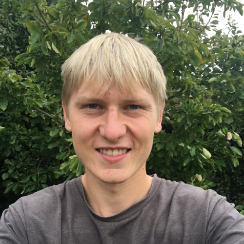
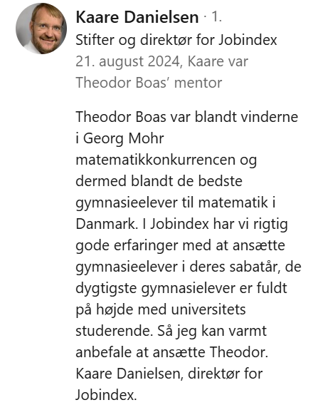
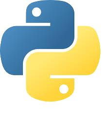
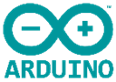

Theodor Boas Bech Myhre


Resumé
Jeg er en selvlært programmør med stærke matematiske evner og en passion for at løse komplekse problemstillinger gennem kreativ tænkning og programmering. Som nybagt STX-student har jeg specialiseret mig i matematik, fysik og biologi, og jeg har allerede udviklet avancerede programmer til databehandling og simulering. Med erfaring i Python og kendskab til flere andre programmeringssprog søger jeg nu udfordringer i IT-branchen, hvor jeg kan udnytte mine tekniske og analytiske færdigheder. Mit mål er at arbejde med AI eller lignende områder i fremtiden.
Referencer
Jeg har tidligere været i kontakt med direktøren fra Jobindex, Kaare Danielsen, som har tilbudt jobmulighed, og som venligst har tilbudt at virke som reference for mig. Han kan træffes på tlf.nr. 20 73 50 10.
Jobindex sponsorerer Georg Mohr-konkurrencen og ønsker at rekruttere unge programmører, der præsterer godt i bl.a. Georg Mohr. Det virkede spændende og jeg søgte jobbet. Jeg vidste ikke, om det var realistisk, men jeg blev tilbudt jobmulighed som udvikler hos dem, efter min løsning af deres programmeringstest havde vist sig at være "ganske glimrende". Jobbet kunne dog kun udføres fra Valby, hvilket ikke var realistisk for mig, da jeg bor i Jylland. Så jeg takkede nej og søger nu noget i Randers/Aarhus-området.
Faglige kompetencer
Jeg er en kreativ og matematisk person, som søger nye udfordringer som softwareudvikler. Jeg er hurtig til at lære nye teknologier at kende, og jeg har en særlig evne til at tænke ud af boksen, hvilket fremgår af flere af mine matematiske programmeringsprojekter. Jeg er den der får den gode idé og kan finde ud af at realisere den.
Mine evner inden for matematik har ført til, at jeg har vundet Georg Mohr to gange (en delt 21. plads og en delt 34. plads, se Georg Mohr-Konkurrencens vindere), hvilket viser at jeg kan kombinere logik med kreativitet.
Jeg har en særlig passion for data. Jeg er rigtig god til at bruge matematiske værktøjer samt programmering på kreative måder til at trække værdifuld information ud af data.
IT-kompetencer
Jeg har meget erfaring med Python , især med NumPy  og matplotlib
og matplotlib  , som jeg bl.a. har brugt til at lave 2D- og 3D-animationer med.
, som jeg bl.a. har brugt til at lave 2D- og 3D-animationer med.
Jeg er ved at lære PHP , C , C++ , Java og Lean .
Jeg er ved at lære at bruge Arduino .
Jeg kan en smule HTML og CSS (hvilket denne hjemmeside vidner om).
Og så har jeg tydeligvis også ret godt styr på Git  og GitHub
og GitHub  , siden det er det jeg bruger til at hoste denne webside.
, siden det er det jeg bruger til at hoste denne webside.
Python-projekter
Om hormoner, vektorfelter og numerisk løsning af differentialligniner.
Tjek det ud!
Uddannelse
Jeg er nybagt STX-student fra Det Kristne Gymnasium i Ringkøbing (2024). Mine særlige fag var Matematik A, Fysik A, Biologi A og Kemi B.
Mit studieretningsprojekt (SRP) handlede om vektorfelter, og hvordan de kan bruges i forbindelse med systemer af differentialligninger - i mit tilfælde, hvordan et pendul svinger. Databehandlingen indeholdt en masse interessante matematiske problemer, fx numerisk differentiering og integrering. Det sjoveste ved det hele var den tankegang, man skulle ind i for at få ”klemt” den relevante information ud af ens data. Jeg forsøgte bl.a. at opstille en model for friktionen i pendulet baseret på mine empiriske målinger. Det var der, jeg følte, jeg fik lov til at være mest kreativ.
Om et par år vil jeg gerne læse matematik, måske kombineret med datalogi. Jeg håber nemlig at komme til at arbejde med AI eller noget, der ligner.
Sprogkompetencer
Dansk: Modersmål
Engelsk: Komfortabel i tale og skrift
Tysk: Rutineret
Personligt
Jeg har altid været nysgerrig på verden, og derfor er flere af mine interesser også ret nørdede. Men jeg elsker også bare at være sammen med mine venner og familie. Jeg kan også godt lide at hjælpe andre.
Jeg nyder at spille fodbold og andet sport, og så kan jeg også godt lide at være ude i ”den vilde natur”. Det synes jeg er både spændende og afslappende, og jeg gør det også tit med nogle af mine venner, hvor vi tager ud og overnatter i skoven.
Mine interesser er meget alsidige og de spænder lige fra filosofi over biologi til cykelreparationer.
Jeg er ret optimistisk omkring hvad fremtiden bringer, og jeg håber at kunne være med til at gøre en forskel for andre gennem de evner, jeg har.